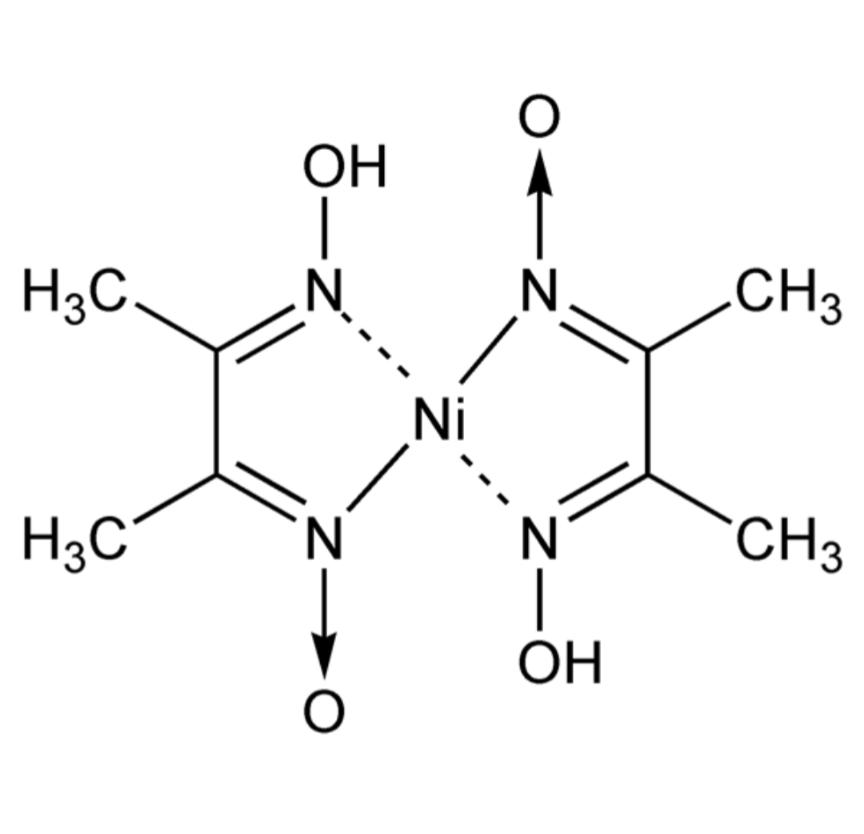
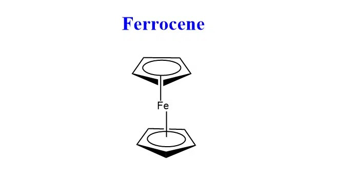

जब दो या अधिक सामान्य लवणों को एक निश्चित अनुपात में मिलाकर जल में घोलकर पुनः क्रिस्टलन किया जाता है तो प्राप्त यौगिक को योगात्मक यौगिक कहते हैं।
ये निम्न दो प्रकार के होते हैं।
- द्विक् लवण।
- संकुल लवण या उपसहसंयोजी यौगिक।
ऐसे योगात्मक लवण जो जल में विलेय करने पर अपने सभी अवयवी घटकों में विभक्त हो जाते हैं। इन यौगिकों के जलीय विलयन में सभी घटक आयनों का परीक्षण किया जा सकता है।
K2SO4.Cr2(SO4)3.24H2O→ 2K2+ + 2Cr3+ + 4SO42- + 24H2O
उत्तर- ऐसे योगात्मक यौगिक जो जलीय विलयन में अपने सभी घटकों का परीक्षण नहीं देते हैं, संकुल यौगिक या संकर यौगिक कहलाते हैं।
उदाहरण -
[Cu(NH₃)₄]SO₄ →[Cu(NH₃)₄]2+ + SO42
द्विक् लवण | संकुल लवण |
ये दो साधारण लवणों के मिश्रण से बनते हैं। | ये केन्द्रीय धातु आयन तथा लिगैण्ड से बनते हैं। |
घोल में पूर्णतः आयनित होकर अपने-अपने आयन देते हैं। | घोल में जटिल आयन के रूप में रहते हैं, पूर्ण आयनित नहीं होते। |
इनके गुण इनके अवयव आयनों के समान होते हैं। | इनके गुण मूल आयनों से भिन्न होते हैं। |
- होमोलेप्टिक संकुल
- हेटरोलेप्टिक संकुल
उत्तर - ऐसे संकुल जिनमें धातु परमाणु केवल एक ही प्रकार के दाता समूह से जुड़े रहते हैं, होमोलेप्टिक संकुल कहलाते हैं।
उदाहरण-
[Cu(NH₃)₄]SO₄
उत्तर - ऐसे संकुल जिनमें धातु परमाणु एक से अधिक प्रकार के दाता समूहों से जुड़े रहते हैं, हेटरोलेप्टिक संकुल कहलाते हैं।
उदाहरण -
[ Co(NH3)5Cl ]Cl₂
- उपसहसंयोजी यौगिकों का उपयोग गुणात्मक विश्लेषण में आयनों की पहचान करने, भास्मिक मूलकों के समूह परीक्षण तथा परिणात्मक आंकलन में किया जाता है।
- इनका उपयोग धातुओं के निष्कर्षण तथा शोधन में किया जाता है।
उत्तर - उप-सहसंयोजक यौगिकों में जो धातु परमाणु विभिन्न लिगेण्ड से जुड़ा होता है, केन्द्रीय धातु परमाणु कहलाता है।
जैसे [Cu(NH₃)₄]SO₄ उप-सहसंयोजक यौगिक मे Cu केन्द्रीय धातु परमाणु कहलाता है।
उत्तर - कोई भी परमाणु, अणु या आयन जो केन्द्रीय धातु आयन को इलेक्ट्रॉन युग्म दे सकता है लिगेण्ड (संलग्नी) कहलाता है। ये लिगेण्ड केन्द्रीय आयन को घेरे रहते हैं।
जैसे [Cu(NH₃)₄]SO₄ उप-सहसंयोजक यौगिक मे NH₃ लिगेण्ड है।
उप-सहसंयोजी यौगिक में केन्द्रीय धातु आयन से सीधे जुड़े हुए लिगेण्डो की संख्या को समन्वयन संख्या या उप-सहसंयोजी संख्या कहते हैं।
जैसे [Cu(NH₃)₄]SO₄ उप-सहसंयोजक यौगिक मे Cu केन्द्रीय धातु की समन्वयन संख्या या उप-सहसंयोजी संख्या 4 है।
समन्वयन मण्डल किसे कहते हैं?
उत्तर - केन्द्रीय धातु परमाणु तथा उससे सीधे जुड़े लिगेण्ड को बड़े कोष्ठक में लिखा जाता हैं। इसे उपसहसंयोजन मण्डल या समन्वयन मण्डल कहते हैं।
जैसे [Cu(NH₃)₄]SO₄ उप-सहसंयोजक यौगिक मे [Cu(NH₃)₄] उपसहसंयोजन मण्डल या समन्वयन मण्डल है।
उपसहसंयोजन मण्डल के बाहर स्थित वे आयन, जो केन्द्रीय धातु से ढीले जुड़े रहते हैं और घोल में आयनन पर अलग हो जाते हैं, आयनन मण्डल कहलाते हैं।
जैसे [Cu(NH₃)₄]SO₄ उप-सहसंयोजक यौगिक मे SO₄ आयनन मण्डल है।
लिगैंड के प्रकार
- मोनोडेंटेट – वह लिगेण्ड जिसमे केवल एक डोनर परमाणु होता है।
उदाहरण: अमोनिया
:NH₃
- बाइडेंटेट – वह लिगेण्ड जिसमे दो एक डोनर परमाणु होते है।
उदाहरण: एथिलीनडायमीन (en)
:NH2-CH2-CH2- H2N:
- पॉलीडेंटेट – वह लिगेण्ड जिसमे अनेक डोनर परमाणु होते है।
उदाहरण: EDTA
उत्तर:
पूरा नाम: एथिलीन डाई एमीन टेट्रा एसिटेटो
स्वभाव: हेक्साडेंटेट लिगैंड
संरचनात्मक सूत्र:

वे लिगैण्ड जो दो विभिन्न दाता परमाणुओं के माध्यम से केंद्रीय धातु आयन से जुड़ सकते हैं, एम्बिडेंटेट लिगैण्ड कहलाते हैं।
उदाहरण - NO₂⁻ (नाइट्राइट)
यह N अथवा O से केंद्रीय धातु आयन से जुड़ सकता हैं अतः NO₂⁻ एक एम्बिडेंटेट लिगैण्ड हैं।
उत्तर- धातु अथवा धातु आयन के साथ संयोग कर जब कोई बहुदन्तुर लिगैण्ड चक्रीय संरचना वाला अणु बनाता है तो इस यौगिक को कीलेट कहते हैं।
उदाहरण- निकेल डाईमेथिल ग्लाइ ऑक्सम

उपयोग-
- धातु अनुमान।
- जैविक अभिक्रियाएँ।
- लेड विषाक्तता का उपचार (EDTA द्वारा)।
- जल शोधन।
वे लिगैण्ड जो किसी धातु आयन को दो या अधिक दाँतों से पकड़कर किलेट बनाते हैं तो उसे कीलेटीकारक कहलाते हैं।
उदाहरण:
EDTA, ऑक्सैलिक अम्ल, एथिलीन डायमीन (en) आदि।
कीलेट का महत्व :
- जल की कठोरता निर्धारण: EDTA कीलेट बनाकर Ca²⁺ व Mg²⁺ आयनों की मात्रा बताता है।
- विश्लेषण में उपयोग: धात्विक आयनों (Ca, Mg) के आकलन में कीलेटिंग एजेंट प्रयोग होते हैं।
- जैव रसायन में: हीमोग्लोबिन में Fe कीलेट स्वरूप में गैसों का परिवहन करता है; कई एंजाइम धातु–कीलेट रूप में कार्य करते हैं।
- चिकित्सा में: सिस-प्लैटिन जैसे कीलेट यौगिक कैंसर उपचार में उपयोगी हैं।
उत्तर -किसी उप-सहसंयोजी यौगिक में केन्द्रीय धातु आयन पर उपस्थित वास्तविक आवेश को ऑक्सीकरण संख्या कहते हैं। यह लिगैण्डों के आवेश को ध्यान में रखकर निर्धारित की जाती है।
उदाहरण [Fe(CN)6]4- में —
Fe + [ 6 × (−1)] = − 4
Fe −6 = − 4
Fe = + 6 − 4
Fe = + 2
Fe की ऑक्सीकरण संख्या = +2.
उत्तर - उप-सहसंयोजक यौगिक के केन्द्रीय धातु परमाणु में उपस्थित इलेक्ट्रॉनों की संख्या तथा बन्ध के बनने से प्राप्त इलेक्ट्रॉनों की संख्या के योग को प्रभावी (प्रभावकारी) परमाणु संख्या क्रमांक (E.A.N.) कहते हैं।
EAN = केन्द्रीय धातु की परमाणु संख्या − आयनीकरण में खोए इलेक्ट्रॉन + लिगैंड से प्राप्त इलेक्ट्रॉन
उदाहरण:
[Fe(CN)₆]⁴⁻ → 36,
[Fe(CN)₆]³⁻ → 35,
[Co(NH₃)₆]³⁺ → 36
1. K₂[Cu(CN)₄] → पोटैशियम टेट्रासायनो क्यूप्रेट (II)
2. K₃[Fe(CN)₆] → पोटैशियम हेक्सासायनो फेर्रेट (III)
3. K₂[Ni(CN)₄] → पोटैशियम टेट्रासायनो निकेलेट (II)
4. K₄[Fe(CN)₆] → पोटैशियम हेक्सासायनो फेर्रेट (II)
5. K₃[Ag(CN)₄] → पोटैशियम टेट्रासायनो आर्जेंटेट (I)
6. K[Ag(CN)₂] → पोटैशियम डायसायनो आर्जेंटेट (I)
7. K[BF₄] → पोटैशियम टेट्राफ्लोरोबोरेट
8. K₄[Ni(CN)₄] → पोटैशियम टेट्रासायनो निकेलेट (0)
9. Na₄[Ni(EDTA)] → सोडियम एथिलीनडायमीन टेट्राएसीटेटो निकेलेट (II)
10. K₂[PtCl₆] → पोटैशियम हेक्साक्लोरो प्लेटिनेट (IV)
11. K[Pt(NH₃)Cl₅] → पोटैशियम ऐमीन पेंटाक्लोरो प्लेटिनेट (IV)
12. Na[Co(CO)₄] → सोडियम टेट्राकार्बोनाइल कोबाल्टेट (−I)
13. Na[Au(CN)₂] → सोडियम डायसायनो ऑरेट (I)
14. Na₄[Ni(CN)₄] → सोडियम टेट्रासायनो निकेलेट (0)
15. K₂[Zn(OH)₄] → पोटैशियम टेट्राहाइड्रॉक्सो जिंक्टेट (II)
16. K₂[HgI₄] → पोटैशियम टेट्रायोडो मर्क्यूरेट (II)
17. [Cu(NH₃)₄]SO₄ → टेट्राऐमीन कॉपर (II) सल्फेट
18. [Ag(NH₃)₂]Cl₂ → डायऐमीन सिल्वर (I) क्लोराइड
19. [Co(NH₃)₆]Cl₃ → हेक्साऐमीन कोबाल्ट (III) क्लोराइड
20. [Cr(H₂O)₆]Cl₃ → हेक्साएक्वा क्रोमियम (III) क्लोराइड
21. [Co(NH₃)₅Cl]Cl₂ → पेंटाऐमीन क्लोरो कोबाल्ट (III) क्लोराइड
अल्फ्रेड वर्नर ने समन्वय यौगिकों की संरचना को समझाने के लिए यह सिद्धांत दिया। जिसके मुख्य अधिग्रहीत निम्न है।
- धातु आयन में दो प्रकार की संयोजकताएँ एक साथ पाई जाती हैं।
- प्राथमिक संयोजकता (आयननशील) धातु की ऑक्सीकरण अवस्था को दर्शाती है। यह ऋणायनों द्वारा पूरी होती है, बिंदीदार रेखा (…..) से दिखाई जाती है और विलयन में आयनित हो जाती है।
- द्वितीयक संयोजकता (गैर-आयननशील) धातु की समन्वय संख्या को दर्शाती है। यह उदासीन अणुओं या ऋणायनों द्वारा पूरी होती है, ठोस रेखा (—) से दिखाई जाती है और विलयन में आयनित नहीं होती।
- प्रत्येक धातु आयन अपनी प्राथमिक और द्वितीयक दोनों संयोजकताएँ पूर्ण करता है।
- प्रत्येक धातु आयन की द्वितीयक संयोजकता निश्चित होती है, और यही उसकी समन्वय संख्या होती है।
- द्वितीयक संयोजकताएँ स्थानिक रूप से व्यवस्थित होती हैं, जिससे निश्चित ज्यामितीय संरचना बनती है।
C.N. 4 → चतुष्फलकीय।
C.N. 6 → अष्टफलकीय।
उदाहरण:
1. [Co(NH₃)₆]Cl₃ में Co³⁺ की
प्राथमिक संयोजकता = 3
द्वितीयक संयोजकता = 6
संरचना: अष्टफलकीय।
विलयन में:
[Co(NH₃)₆]Cl₃ → [Co(NH₃)₆]³⁺ + 3Cl⁻
2. [Co(NH₃)₅Cl]Cl₂ में Co³⁺ की
[Co(NH₃)₅Cl]Cl₂ → [Co(NH₃)₅Cl]²⁺ + 2Cl⁻
3. [Co(NH₃)₄Cl₂]Cl में Co³⁺ की
द्वितीयक संयोजकता = 6
[Co(NH₃)₄Cl₂]Cl → [Co(NH₃)₄Cl₂]⁺ + Cl⁻
उत्तर: Linus Pauling द्वारा प्रस्तुत VBT के अनुसार समन्वय यौगिकों की संरचना व चुंबकीय गुण समझाए जाते हैं।
इसके मुख्य अधिग्रहीत निम्न है।
- केंद्रीय धातु आयन अपने लगभग समान ऊर्जा वाले खाली कक्ष उपलब्ध कराता है।
- ये कक्ष संकरण करते हैं।
- प्रत्येक लिगैंड अपने अकेले इलेक्ट्रॉन युग्म से इन कक्षों को भरता है और सहसंयोजक बनता है।
- बने हुए बंध दिशात्मक होते हैं और यौगिक की ज्यामिति निर्धारित करते हैं।
संकरण और संरचना
sp³ → चतुष्फलकीय
dsp² → वर्गाकार समतलीय
d²sp³ या sp³d² → अष्टफलकीय
उत्तर: एक ही आणविक सूत्र वाले यौगिक जब भिन्न व्यवस्था प्रदर्शित करते हैं तो उन्हें समावयवी और इस गुण को समावयवता कहते हैं।
समावयवता दो प्रकार की होती है।
(A) संरचनात्मक समावयवता - संरचना या बंधन की स्थिति में भिन्नता के कारण उत्पन समावयवता को संरचनात्मक समावयवता कहते है।
यह निम्न प्रकार की होती है।
- आयनन समावयवता - जब आयनन क्षेत्र में उपस्थित समूह का उपसहसंयोजन क्षेत्र में उपस्थित समूह से विनिमय होता है तो इसे आयनन समावयवता कहते हैं।
उदाहरण:
[Co(NH₃)₅Br]SO₄
[Co(NH₃)₅SO₄]Br
- हाइड्रेट समावयवता - जब जल के अणु किसी संकुल में उपसहसंयोजन मण्डल के भीतर और बाहर विभित्र प्रकार से उपस्थित रहते है तब इसे हाइड्रेट समावयवता कहते है।
उदाहरण:
CrCl₃·6H₂O के तीन रूप
[Cr(H₂O)₆]Cl₃ (बैंगनी)
[Cr(H₂O)₅Cl]Cl₂·H₂O (हरा)
[Cr(H₂O)₄Cl₂]Cl·2H₂O (गहरा हरा)
- लिंकज समावयवता - जब एक ही लिगण्ड केन्द्रीय आयन से दो भिन्न प्रकारों से जुड़ सकता है तब यह समावयवता प्रदर्शित होती है।
[Co(NH₃)₅(SCN)]Cl
[Co(NH₃)₅(NCS)]Cl
- समन्वय समावयवता - जब कैटायनिक और एनायनिक भागों के बीच लिगैंड का अदला-बदली होती है तो इसे समन्वय समावयवता कहते है।
[Co(NH₃)₆][Cr(CN)₆]
[Cr(NH₃)₆][Co(CN)₆]
(B) त्रिविम समावयवता - अणु में केन्द्रीय आयन के चारों ओर लिगैण्डों की आकाशीय व्यवस्था में भिन्नता से उत्पन्न समावयवता हो त्रिविम समावयवता कहते हैं।
यह दो प्रकार की होती है।
- ज्यामितीय समावयवता - केन्द्रीय आयन के चारों ओर आकाशीय व्यवस्था मे लिगैण्ड की स्थिति में अन्तर के कारण उत्पन समावयवता को ज्यामितीय समावयवता कहते है।
यदि समान प्रकार के लिगैण्ड एक-दूसरे के निकटवर्ती स्थान घेरते हैं तो इसे समपक्ष रूप (cis form) कहते हैं। और यदि वे एक-दूसरे के विपरीत स्थान पर होते हैं तो उसे विषम पक्ष रूप (trans form) कहते हैं।
उदाहरण: [Pt(NH₃)₂Cl₂] → cis और trans रूप।

- प्रकाशीय समावयवता - जब एक यौगिक के ऐसे दो समावयवी जो एक-दूसरे के दर्पण प्रतिबिंब होते हैं और एक-दूसरे पर अधिरोपित नहीं हो सकते, तो इसे प्रकाशीय समावयवता कहते हैं।
ये समावयवी ध्रुवीकृत प्रकाश को दाएँ घुमाता है उसे d- समावयवी तथा जो समावयवी बाएँ घुमाता हैं उसे l समावयवी कहते हैं।
उदाहरण -

उत्तर: समन्वय यौगिक उद्योग, औषधि और विश्लेषण में महत्वपूर्ण हैं।
उपयोग:
- धातु निष्कर्षण में (Au, Ag को NaCN द्वारा)।
- फोटोग्राफी में (AgBr का विलयन हाइपो में)।
- जल की कठोरता ज्ञात करने में (EDTA द्वारा)।
- औषधियों में (EDTA – लेड विष का उपचार, सिसप्लैटिन – कैंसर उपचार)।
- इलेक्ट्रोप्लेटिंग में K[Ag(CN)₂] द्वारा ।
- अघुलनशील पदार्थों को घुलाने में।
उत्तर: वे यौगिक जिनमें धातु परमाणु सीधे कार्बन परमाणु से जुड़ा होते है उन्हें ऑर्गेनोमेटालिक यौगिक कहते हैं।
C₂H₅Na
CH₃MgI
(C₂H₅)₂Zn
Fe(η⁵–C₅H₅)₂ (फेरोसीन)
उपयोग:
- ईंधन योजक: Pb(C₂H₅)₄ पेट्रोल में एंटी-नॉक यौगिक।
- कार्बनिक संश्लेषण: ग्रिग्नार्ड अभिकर्मक (RMgX) द्वारा।
- उत्प्रेरक: Ziegler–Natta उत्प्रेरक (Ti/Al यौगिक) द्वारा पॉलिमर संश्लेषण।
- औषधियाँ: कुछ औषधियों में।
उत्तर: फेरोसीन एक ऑर्गेनोमेटालिक यौगिक है।
सूत्र: Fe(η⁵–C₅H₅)₂

इसकी संरचना सैंडविच संरचना है जिसमें
- Fe दो चक्रीय C₅H₅⁻ रिंगों के बीच स्थित होता है।
- प्रत्येक रिंग Fe को 5 π-इलेक्ट्रॉन प्रदान करती है।
- कुल 10 इलेक्ट्रॉन Fe के साथ समन्वय करते हैं।
- यह संरचना अत्यंत स्थिर और एरोमैटिक गुणधर्म वाली होती है।
उत्तर: जिप्से लवण Pt–ethylene कॉम्प्लेक्स है।
सूत्र: K[PtCl₃(η²–C₂H₄)]·H₂O

संरचना:
- Pt +2 ऑक्सीकरण अवस्था में है।
- C₂H₄ लिगैंड Pt से अपने π-बंध (C=C) द्वारा जुड़ता है।
- एथिलीन side-on (η²) प्रकार से Pt से समन्वय करता है।
- Pt → C=C π-back bonding द्वारा स्थिरता बढ़ाता है।
- Pt का ज्यामिति वर्गाकार समतलीय होती है।